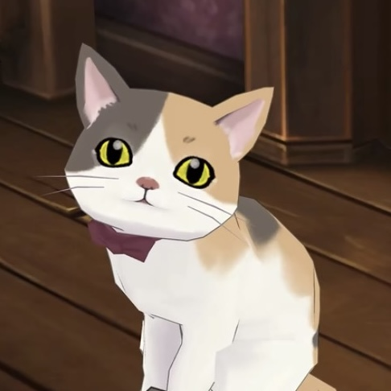

By a curious turn of fortune, we have begun keeping a cat from today onward! Waggy belongs to a dear friend of ours from Japan. The little creature is most well-behaved and sensible—and quite exceedingly adorable besides! Every morning it wakes me by gently nudging me with its soft, fluffy head, and after such a beginning it is quite impossible to feel cross for the rest of the day. No wonder our Japanese friend insists on keeping cats, even when he says he can scarcely afford his meals!
I have been wondering whether there might be some opportunity to write Waggy into a story. Perhaps it might become a clever assistant in one of the great detective's cases! Though… if the great detective should happen to be allergic to cat fur, I fear matters might become rather troublesome indeed…

✦ Comments ✦
leave a thought on this post ♡